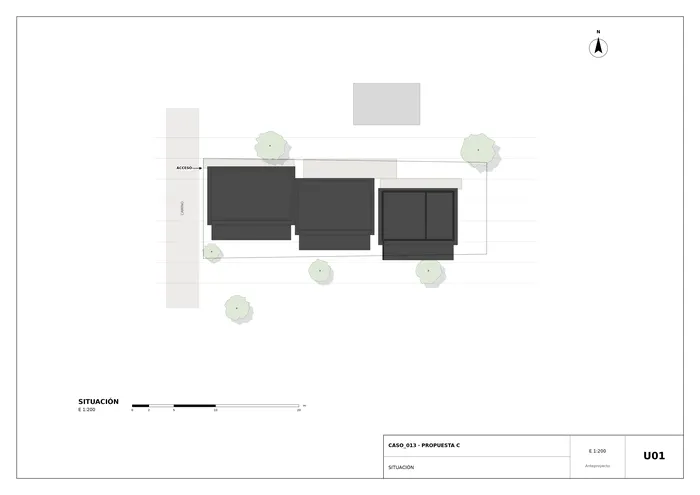
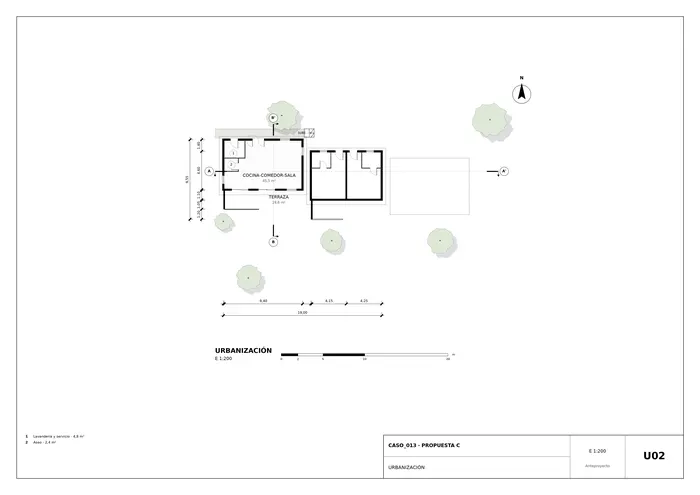
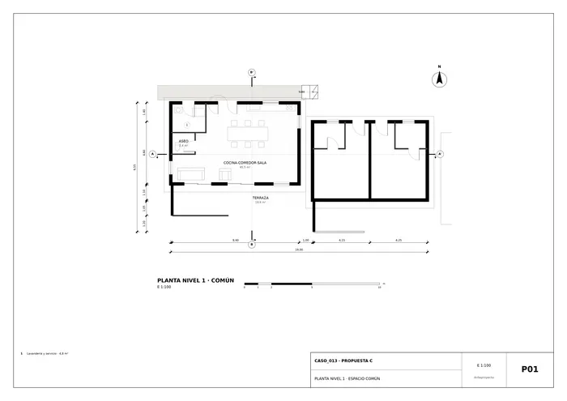
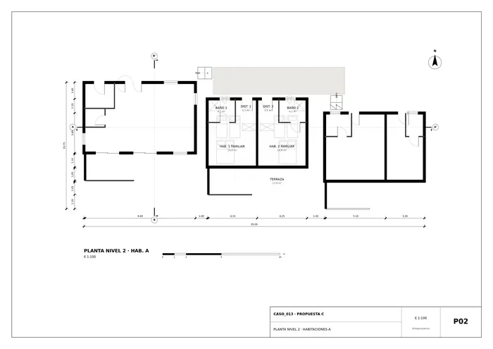
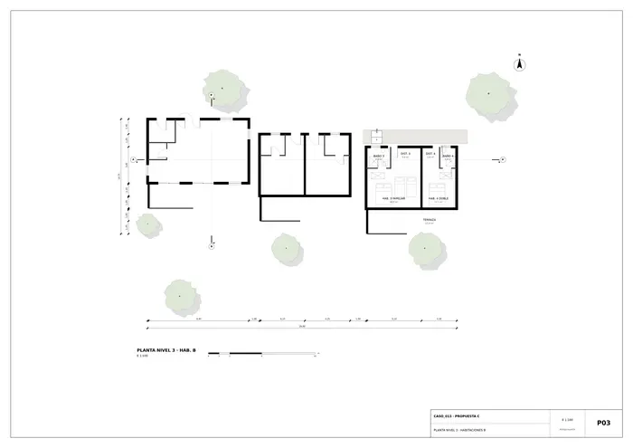
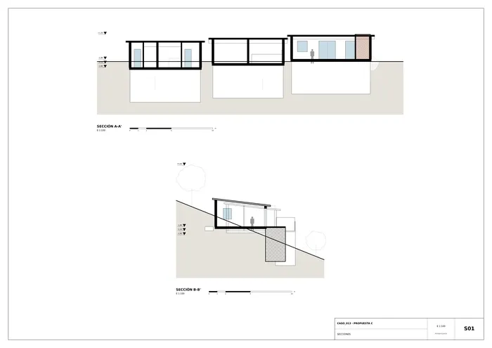
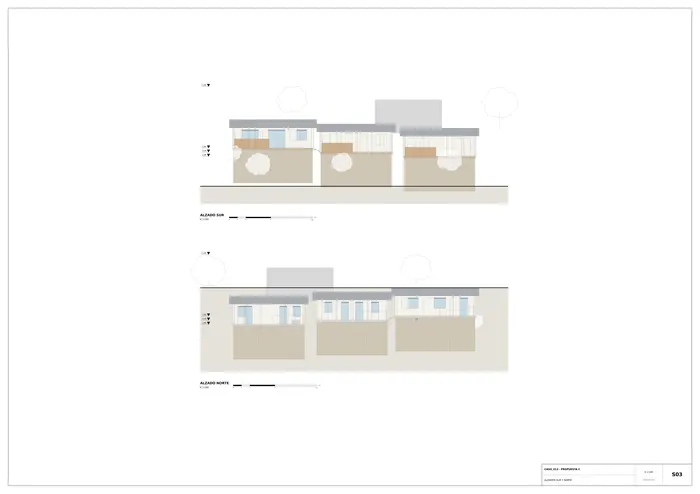
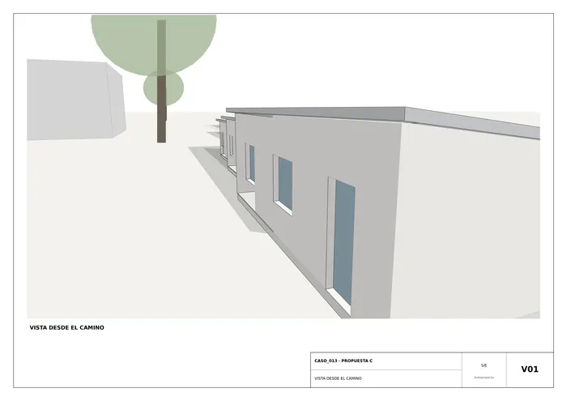
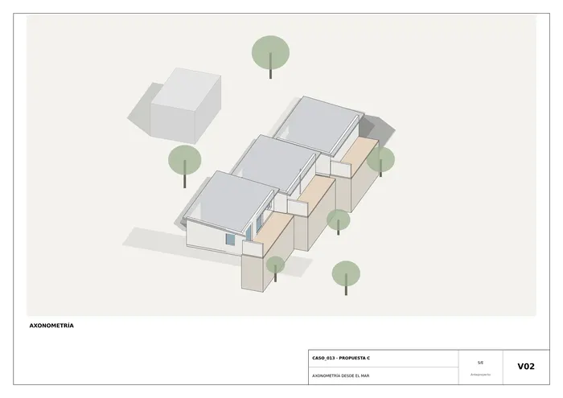
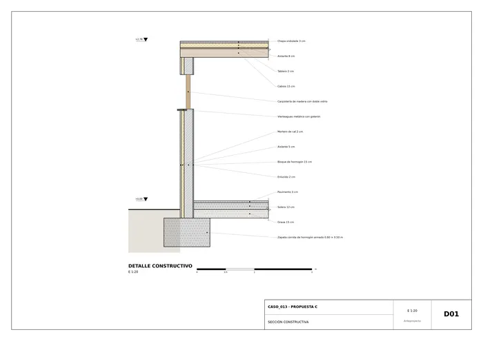

Caso 013 · Alejandro Soffia + Gabriel Rudolphy · 2014 · hospedaje (hostal)
Consigna C: cuestiono que el alojamiento sea una sola pieza (el boceto muestra un polígono). Lo fragmento en tres pabellones de un nivel (común + dos de habitaciones) que bajan en escalones de 0,50 m por la ladera (-1,80 / -2,30 / -2,80), desplazados en planta hacia el sur. Cada uno es un volumen pequeño que sigue el terreno con un movimiento de tierras mínimo y deja pasar la vista al mar entre piezas. Las terrazas se apoyan en bancales de piedra al sur y las cubre y protege del viento SO un muro de bloque en el extremo oeste.
Clima: Csb, verano fresco, invierno húmedo, brumas, viento S-SO fuerte por la tarde. Estrategia: masa moderada (bloque aislado por fuera), huecos grandes solo al sur (vistas, protegidos por cortavientos), ventanas pequeñas al norte (sol en el hemisferio sur, ventilación cruzada con la cubierta alta al norte) y cubierta ligera.
| 1. Barra única de 2 niveles | 2. Tres pabellones escalonados (elegido) | |
|---|---|---|
| Piezas / niveles | 1 / 2 | 3 / 1 cada una |
| Programa | Común abajo, habitaciones arriba: escalera interior, no ofrece intimidad a grupos | Habitaciones independientes del común, cada grupo con su entrada |
| Clima y vistas | Vuelo sobre la ladera, obstruye vistas de la parcela vecina; muro largo de cara al viento | Cortavientos por pieza, vista entre pabellones, ventilación cruzada |
| Obra y coste | Mayor desmonte y cimentación | Cimentación sencilla por plataformas, ejecutable por constructores locales; algo más de perímetro |
| Normativa | Más altura | Una planta, ocupación baja (~160 m² de 402 m²) |
Actividades: dormir (grupos y familias, estancia estival), cocinar y comer juntos, estar, lavar ropa y sábanas, estar fuera con vistas. Elijo 4 habitaciones, 14 plazas: 3 familiares (doble + 2 camas) y 1 doble, cada una con baño propio. Comparado con una versión polivalente de 3 habitaciones, 4 permite dos grupos o dos familias con una pareja, sin superar los 230 m². Un único espacio común grande (cocina-comedor-sala) con terraza comedor al sur: se cuestiona la relación interior-exterior con puertas-ventana de 2 m. Camino peatonal sobre el borde norte con peldaños entre pabellones.
| A. Bloque aislado por fuera + cubierta de chapa (elegida) | B. Entramado de madera ligero | |
|---|---|---|
| Huecos | S 35 % (comunes) y 25 % (hab.), N 10 % | S 40 %, N 12 % |
| Ventilación | Cruzada N-S (ventanas altas al norte) | Cruzada, además infiltraciones altas |
| Solar | Cortavientos y alero de 0,6 m al sur | Aleros mayores |
| Coste y clima | Mano de obra local, inercia térmica, resiste brumas y salitre con mortero de cal | Rápida, más cara y de más mantenimiento por la humedad |
Elijo A por coste, disponibilidad local y durabilidad; la madera queda en terrazas y cortavientos.
| Exigido | Propuesto | Cumple |
|---|---|---|
| Documentos: situación | U01 | Sí |
| Plantas | P01-P03 (una por nivel/pabellón) | Sí; cada lámina amuebla su pabellón |
| Secciones | S01 (A longitudinal, B transversal) | Sí |
| Alzados | S03 (sur y norte) | Sí |
| Detalle constructivo | D01 1:20 | Sí |
| Urbanización (U02) y vistas | U02, V01, V02 | Sí |
| Habitaciones con baño, "a definir" | 4 (3 familiares y 1 doble), 14 plazas, 14-18 m² + baño 3-4 m² | Sí |
| Espacio común, 1 | 1: cocina-comedor-sala 45,5 m² | Sí |
| Lavandería y servicio | Lavandería ~5 m² + aseo en pabellón común | Sí |
| Terrazas con vistas al mar | Una por pabellón, de 2,4 m de fondo | Sí |
| Superficie 140-230 m² | ~156 m² construidos (57 + 49 + 49 por pabellón) | Sí |
| Presupuesto 600-650 USD/m² | ~97 000 USD a 625 USD/m² | Sí (estimado) |
| Normativa (retranqueos, altura) | 1 planta, altura máx. 3,3 m; se respeta ≥ 1 m a linderos | Sí (valores no constan) |
| Sin edificación existente | Todo nuevo | Sí |
| Acceso rodado y peatonal en un extremo | Entrada por el oeste; aparcamiento fuera de la parcela | Sí |
Muros de carga de bloque de hormigón 15 cm + 5 cm de aislante exterior + mortero de cal (e = 25 cm); luces de cubierta de 4,0-5,2 m con cabios de madera 6x15 cm cada 60 cm sobre muros de bloque de carga (predimensionado: L/30 ≈ 15 cm). Zapata corrida de 0,6 x 0,5 m armada en cada pabellón. Solera de hormigón de 12 cm sobre grava. Cubierta de chapa ondulada de una vertiente (12 %) que cae hacia el sur con aislante de 8 cm. Bancales de piedra local en terrazas. Muros de contención de bloque en el lado norte donde se corta la ladera (anteproyecto: se dimensionarán en proyecto de ejecución). Divisiones de ladrillo hueco de 10 cm.
Fosa séptica con campo de infiltración al sur (por cota), depósito de agua de lluvia en la cubierta común para riego de la ladera; agua caliente por termo solar sobre las cubiertas. Los pabellones están conectados por peldaños de 0,17 m (no accesibles con silla de ruedas sin rampa: desviación declarada, se resuelve con rampa del 8 % en la fase siguiente). Evacuación directa al exterior de cada habitación por la puerta norte y por la puerta-ventana sur.
Cada planta (P01-P03) dibuja todos los muros pero solo amuebla su pabellón. Las ocupaciones bajas de las láminas se deben a la forma alargada de la parcela.

U01 · Situación
U02 · Urbanización
P01 · Planta nivel 1 · espacio común
P02 · Planta nivel 2 · habitaciones a
P03 · Planta nivel 3 · habitaciones b
S01 · Secciones
S03 · Alzados sur y norte
V01 · Vista desde el camino
V02 · Axonometría desde el mar
D01 · Sección constructivaMemoria de la propuesta tal como la entregó el sistema. Se han omitido las notas internas del proceso (revisiones, control de reconocimiento y referencias a archivos de trabajo).